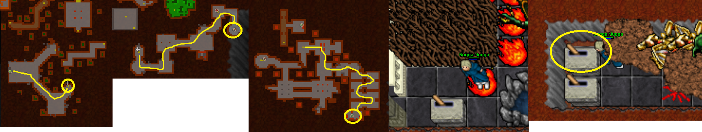

Wrecked ship
Requirements:
Tasks from Starboy's brother:
Rewards: Flute, ship model, crystal key (6363)
This quest is like Banshee quest in Tibia but here’s 6 levers you need to pull in order to get into the quest area. Some requires items and some just blood spilled.
First up, head to Fallen gods magicians creek by boat and open the 3 levers to enter the center area. Now here’s 2 ways to go there: Same way as draconian set upgrade quest but go to different teleport or follow the path on East. I’ve marked here just this one path now.
So go underground and go and head North-West corner teleport. Follow the path to South by the Hybrids and Dharalions + xarptor. You’ll find a teleport there. Now you need to get first the Crystal key (Yellow circle). Open the door with Hypergiant and go upstairs. Take the chest and go back to the house with Vega Draconis and lever (Blue circle). After pulling the lever go North house with Xarptors and go downstairs.
1st lever
Go full down as far as you find yourself at the tunnel place. Go North-West and use a pick/rune on floor (if there’s blood on the spot, you need to wait it to clear) and head North-East hole then.
North (red circle) is the first place you need to go for now. Go downstairs and find the place with black and white pearl on stands. Put those pearls on the right sides and pull the right side lever. Finish that area with another lever and go back.

2nd lever
Head back up and go East side hole. Follow the road to the South-East and climb up the ladders. Go into the teleport, there’s beheliano’s and 1 Barracuda man. You can use pot here to block it from moving.
After getting past the Barracuda man, head North first. Go downstairs 2 times and you’ll find yourself with morgaroths and King robert Baratheon. Now you need to pull these 10 levers before going for the last one. Every lever summons more monsters so be prepared. After hitting all the 10 levers, pull the last one to the South. You’ll get teleported to next place with 2 levers, pull the North one here.

3rd lever
Now you are ready to continue. Go back up and head East and down to the first stairs. Right after you go down, there’s an another lever. Step on left side tile and let someone hit you here so you’ll spill blood. Then you can pull the lever.

4th lever
After third lever head South and kill Hydrocon & chinese panda. Follow the road and you’ll come across stairs going up on the West. Go there and follow the coins on picture to get to the lever.
5th lever
From the last lever, follow the road to the East stairs. Follow the path and you’ll eventually come to a bigger place, where you need to go East and ziczac to the South with surphyres. Pull the lever and you’ll get teleported to another place. Kill bermudas, hypergiant and hybrid. Pull the upper lever. The down lever takes you back to the last place.

6th lever
Head back up and go West stairs down with orshabaals. Go to the right stairs up and down, pick a hole and go in. There is in total of 6 helarctoses in the hole with a lever.
Last lever, the bookcase and the rewards
Go back to the starting point and go East side. After you downstairs, before the actual doors, remember to touch the hidden lever at the bookcase, North of the stairs. After xarptorius there’s stairs down, go West through the doors and go downstairs with no way back. Kill surphyres and other monsters and claim your rewards.